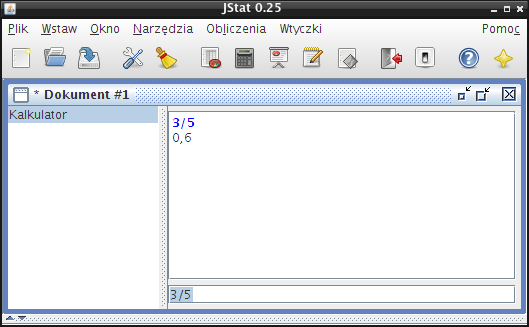
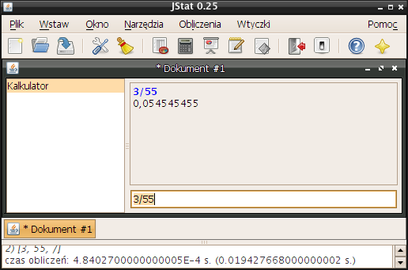
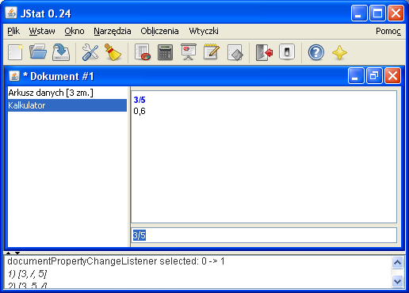
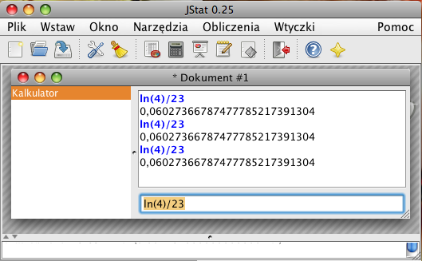
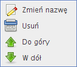
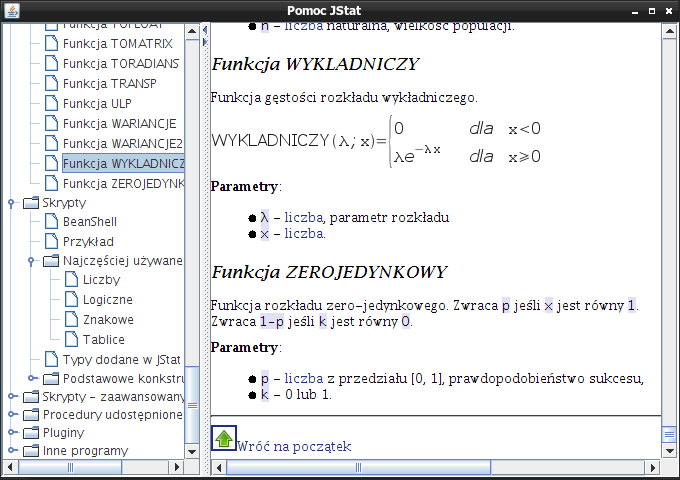

zapisany, wyświetla dialog pozwalający wprowadzić nazwę pliku.


Rozdział jest opisem interfejsu programu JStat, jaki użytkownik widzi po uruchomieniu aplikacji oraz przedstawia wskazówki do używania wbudowanej pomocy.
Interfejs programu może mieć wygląd typowy dla aplikacji Javy (OCEAN) lub integrować się z systemem operacyjnym, na jakim został uruchomiony (NATIVE) [How to Set the Look and Feel, http://java.sun.com/docs/books/tutorial/uiswing/lookandfeel/plaf.html z dnia 30 kwietnia 2008]. Wygląd programu można zmienić w ustawieniach. Tam też można zdecydować o sposobie wyświetlania podpisów tekstowych pod ikonami na pasku narzędzi.
|  |
|
 |
|
 |
|
 |
| Ikona | Znaczenie |
|---|---|
|
Tworzy nowy dokument. |
|
Otwiera istniejący dokument. |
|
Zapisuje bieżący dokument. Jeśli nie nie został wcześniej zapisany, wyświetla dialog pozwalający wprowadzić nazwę pliku. |
|
Wyświetla dialog ustawień programu. |
|
Czyści pole z logami programu. |
|
Wstawia nowy arkusz do bieżącego dokumentu. |
|
Wstawia nowy kalkulator do bieżącego dokumentu. |
|
Wstawia nowy wykres do bieżącego dokumentu. |
|
Wstawia nowy notatnik do bieżącego dokumentu. |
|
Wstawia nowy skrypt do bieżącego dokumentu. |
|
Kończy pracę z programem. |
|
Pokazuje okno z pomocą. |
| Pokazuje okno z informacjami o programie. |
Każdy dokument może się składać z dowolnej ilości podstron, różnych typów, jak na przykład arkusz z danymi, wykres czy notatnik. Kolejne podstrony dokumentu można dodawać za pomocą pozycji Wstaw w menu głównym. Po lewej stronie okna z dokumentem znajduje się lista wszystkich wstawionych podstron. Po kliknięciu na wybranej stronie, zostanie ona wyświetlona w centralnej części okna. Po kliknięciu prawym przyciskiem myszki na wspomnianą listę uzyskuje się dostęp do menu kontekstowego.
|  |
Pozycje w menu pozwalają na:
Aby uruchomić pomoc, należy z menu głównego okna Pomoc wybrać pozycję Pomoc. Można też użyć skrótu klawiaturowego, jakim jest klawisz F1.
|  |
Pomoc programu jest napisana w formacie HTML, ułatwiając jej umieszczanie w internecie oraz gwarantując zgodność ze standardami. Łatwo jest również wygenerować drzewo dokumentu. Wszystkie pliki ze ścieżki pomocy są automatycznie przeszukiwane, a nagłówki są dodawane do drzewa widocznego po lewej stronie okna. Zachowywana jest struktura dokumentu, co oznacza, że podrozdziały ukazują się dopiero po rozwinięciu wszystkich wcześniejszych poziomów nagłówków. Kliknięcie na dowolną pozycję drzewa otworzy w polu po prawej stronie zawartość odpowiedniego pliku przewiniętą na zaznaczony temat. Dzięki temu jest możliwa łatwa nawigacja przez istniejącą pomoc. Drzewko jest dynamicznie generowane, każda zmiana dokumentacji znajduje automatyczne odzwierciedlenie w strukturze drzewa. W przyszłości dodana zostanie funkcja przeszukiwania plików pomocy.
Dzięki formatowi HTML, w jakim została napisana pomoc, możliwe stało się utworzenie dokumentacji wraz z odnośnikami do innych dokumentów, w których są zawarte np. dodatkowe informacje lub definicje. Ma to przewagę nad zwykłym tekstowym trybem, gdyż zbędne staje się przeszukiwanie kilkudziesięciostronicowego dokumentu. Kliknięcie na odnośnik automatycznie przenosi użytkownika w odpowiednie miejsce. Dodatkowo zależnie od preferencji przeglądającego lub zainstalowanego oprogramowania, taka sama pomoc może być oglądana przez przeglądarkę wewnętrzną dokumentacji jak również systemową przeglądarkę internetową.